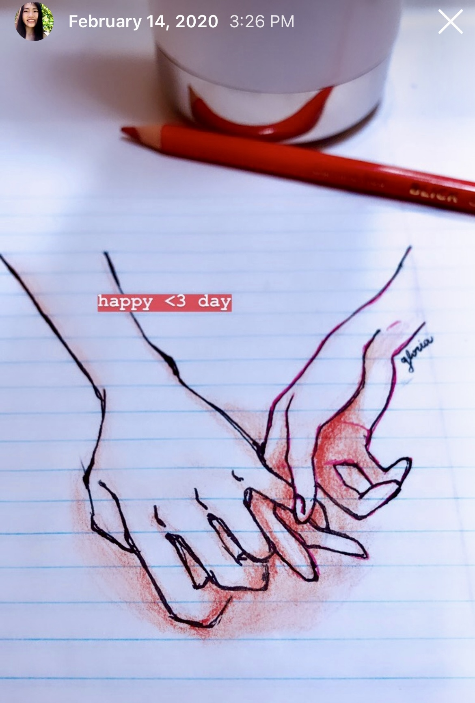

2/2022 EDIT: Two years later, I've since reconciled
with the person mentioned below, and I think we understand each other a little better now. I debated whether or not to delete this blog,
and my
decision to keep it is not reflective of any bitterness, but rather to acknowledge a formative
experience that continues to shape how I interact with people today.
It recounts when I hit emotional
rock-bottom and the lessons/self-discovery gleaned from there, one year later.
Since publishing this, several friends have
personally written to me about how this blog resonated with them, sharing that they have had similar experiences. So I leave this up
in the hope that others can find companionship in being vulnerable.

A weird thing happened recently. On Lunar New Year (2/12/21), to be exact. I received a verbose apology text from someone, let's call them A, who quite abruptly exited my life a year ago. Though I'm not sure what catalyzed the message, nor their intentions (—asking to meet, really!?), I'm immensely grateful that they reached out. It validated a lot of the emotions I’d felt at the time, and helped me realize the profound impact they had on the way I now approach socializing and interpersonal relationships. Unpack your bags, ladies and gentlemen, ‘cause I sure am unpacking mine.
Scrolling up in Messenger, I saw our last correspondence was timestamped 2/17/20. People come and go, and boy, did I learn that then. I had known that people leave if they don't care about you, but A taught me that people who care about you, or really seem to, can also disappear with very little in the way of farewell or explanation. To be honest, I was really hurt. I hated admitting that I had cared too much. I hated myself for being not worth someone’s time. I hated myself for not having any close friends with whom I could really share my troubles. This last point— difficulty in making and keeping close friends (something I’d been worried about long before I met A)— continued to bother me for far longer than any hard feelings over this incident particularly.
The subsequent onset of quarantine provided ample time to ponder whether there’s something wrong with me as a person, and probe at all of the ways in which I am lacking— socially, academically, and personally. Though the results of this investigation remain inconclusive, and I'm still a flawed person, I’m proud to say that I don’t hate myself now quite as much as I did then. In the past year, I’ve had the fortune of making genuine friends through work and school, and, for the first time since starting college, I feel like I have friends who truly care about my wellbeing. Friends with whom I can discuss this sort of stuff. Thanks to my experience with A (and subsequent reflection), I’m unashamed to feel deeply, to be recklessly open and sincerely friendly, to care for others without expectation, and to be fine when some of them leave, because above all, I admired A for their unabashed and abundant kindness, which I suppose wasn't so abundant after all. People can come and go at a moment’s notice, so the best we can do is to treat others with sincerity during the precious window in which our lives intersect.